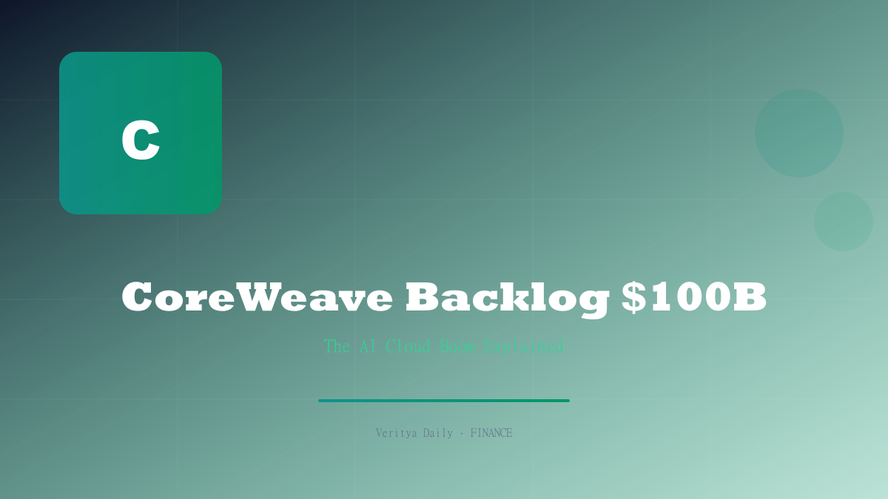

CoreWeave's Backlog Tops $100 Billion — The AI Cloud Boom Explained

Key Takeaways
- CoreWeave shares jumped 9% after reporting a contracted backlog exceeding $100 billion
- Bitcoin fell to $63,500 the same day, highlighting the AI-vs-crypto capital divergence
- AI compute is becoming a bankable asset class, attracting institutional infrastructure capital
- Multi-year contracted revenue provides unprecedented visibility for an emerging company
- The AI cloud market is structurally different from traditional cloud computing
Table of Contents
- The $100 Billion Milestone: Breaking Down CoreWeave's Backlog
- Why CoreWeave's Stock Surged 9% — Market Reaction Analyzed
- AI Compute vs. Bitcoin: The Capital Divergence
- How AI Cloud Became a Bankable Asset Class
- The Competitive Landscape: Who Else Is in the Game
- What $100B in Backlog Means for the Broader Market
The $100 Billion Milestone: Breaking Down CoreWeave's Backlog
CoreWeave, the specialized AI cloud computing provider, has crossed a milestone that would have seemed impossible just two years ago: a contracted revenue backlog exceeding $100 billion. This figure represents binding, multi-year agreements with enterprises that have committed to GPU compute capacity over periods ranging from three to five years.
To put this number in perspective, $100 billion in contracted backlog is larger than the annual revenue of all but a handful of companies in the S&P 500. It exceeds the GDP of many countries. And it belongs to a company that was operating crypto mining rigs just a few years ago before pivoting to AI infrastructure.
The backlog is composed of several types of agreements:
- Enterprise compute contracts: Multi-year GPU leases with Fortune 500 companies
- AI lab agreements: Long-term infrastructure deals with AI research organizations
- Cloud platform partnerships: Agreements with other cloud providers for capacity sharing
- Government contracts: Federal and defense AI infrastructure commitments
What makes this backlog particularly valuable is its contracted nature. These are not pipeline estimates or qualified leads — they are signed agreements with creditworthy counterparties. This is the kind of revenue visibility that infrastructure investors dream about.
Why CoreWeave's Stock Surged 9% — Market Reaction Analyzed
The immediate market reaction to the backlog announcement was a 9% surge in CoreWeave shares, a significant move for a company of its size. The rally was driven by more than just the headline number — it reflected a fundamental re-rating of the company's growth trajectory.
Analysts pointed to several factors that drove the stock higher:
"The $100B backlog changes the investment thesis from 'AI cloud is growing' to 'AI cloud demand is accelerating faster than anyone modeled.' That's a re-rating event." — Sell-side research note
| Metric | Pre-Announcement | Post-Announcement |
|---|---|---|
| Contracted Backlog | ~$80B (est.) | $100B+ |
| Share Price Move | — | +9% |
| Revenue Visibility | 3+ years | 4-5 years |
| Implied Valuation Premium | Baseline | Significant upgrade |
The 9% rally also triggered short covering from investors who had bet against CoreWeave on the thesis that AI infrastructure demand was peaking. The backlog data decisively refuted that narrative, forcing shorts to cover and amplifying the upward move.
AI Compute vs. Bitcoin: The Capital Divergence
Perhaps the most striking aspect of CoreWeave's milestone was what happened simultaneously in the crypto market. On the same day that CoreWeave shares surged 9%, bitcoin fell to $63,500, continuing its weeks-long slide from the $66,000 level.
This divergence tells an important story about capital flows in 2026. Institutional investors who might have allocated to crypto in previous cycles are increasingly directing capital toward AI infrastructure instead. The logic is straightforward: AI compute offers contracted, predictable cash flows backed by enterprise demand, while bitcoin remains a speculative asset with no cash flows.
The capital rotation is visible in several areas:
- GPU mining farms are being repurposed from crypto mining to AI compute
- Institutional capital that funded crypto infrastructure is pivoting to AI cloud
- Energy contracts originally signed for mining operations are being redirected to data centers
- Talent migration from crypto infrastructure to AI infrastructure companies
This doesn't mean bitcoin and crypto are doomed — but it does mean that AI infrastructure is competing for the same pool of capital that previously flowed almost exclusively into crypto.
How AI Cloud Became a Bankable Asset Class
The transformation of AI compute from an operational expense to a bankable infrastructure asset class is one of the most significant financial developments of 2026. CoreWeave's $100B backlog is the clearest evidence that this transformation is real and accelerating.
A "bankable" asset class needs several attributes: predictable cash flows, long-duration contracts, creditworthy counterparties, and the ability to be financed, securitized, and used as collateral. AI compute now checks all of these boxes.
The bankability of AI compute has implications that extend far beyond CoreWeave:
- Infrastructure funds can now allocate to AI compute alongside traditional infrastructure
- Banks can lend against GPU clusters as collateral, creating a new lending market
- Insurance products are being developed to cover GPU cluster downtime and obsolescence
- Secondary markets for compute contracts are emerging, improving liquidity
This financialization of AI compute is still in its early stages, but the trajectory is clear. What real estate was to the 20th century and internet infrastructure was to the early 2000s, AI compute is becoming for the late 2020s.
The Competitive Landscape: Who Else Is in the Game
CoreWeave may be the most prominent pure-play AI cloud company, but it is not alone in the market. The competitive landscape is evolving rapidly, with several categories of players vying for share of the AI infrastructure pie.
Hyperscalers like AWS, Google Cloud, and Microsoft Azure offer GPU compute as part of their broader cloud platforms. Their advantage is scale and existing customer relationships; their disadvantage is that AI compute is a small part of their overall business, limiting focus.
Specialized AI cloud providers like CoreWeave, Lambda Labs, and Voltage Park focus exclusively on GPU compute. Their advantage is specialization and cost efficiency; their disadvantage is limited service breadth and smaller balance sheets.
Traditional data center operators are increasingly adding GPU capacity to their facilities. Equinix, Digital Realty, and others are retrofitting existing data centers to support high-density AI workloads.
For investors, the key question is which model will dominate. The answer likely depends on the use case: hyperscalers for flexible, on-demand compute and specialized providers for dedicated, long-term infrastructure. Both models will likely coexist, but CoreWeave's $100B backlog suggests the specialized model is gaining serious traction.
What $100B in Backlog Means for the Broader Market
CoreWeave's $100 billion backlog is not just a company-specific story — it has implications for the entire market. Here's what it signals:
AI spending is not slowing down. Despite concerns about an AI bubble and overinvestment, the contracted demand for AI compute continues to accelerate. The $100B backlog represents real money committed by real companies for real workloads.
The GPU supply chain will remain tight. $100B in contracted demand means GPU orders are locked in for years. This is bullish for Nvidia and the entire semiconductor supply chain, as it ensures sustained demand even if the broader economy slows.
Power infrastructure is the next bottleneck. AI compute requires enormous amounts of electricity. The $100B in GPU commitments will require corresponding investments in power generation, transmission, and cooling infrastructure.
The AI infrastructure trade has legs. For investors, CoreWeave's milestone confirms that the AI infrastructure theme is not a flash in the pan. It is a multi-year, multi-trillion-dollar buildout that will create opportunities across the supply chain — from semiconductors to data centers to power companies.
As for bitcoin's dip to $63,500 on the same day, it serves as a reminder that capital is finite, and when AI infrastructure offers bankable, contracted returns, speculative assets face an uphill battle for allocations.
Disclaimer: This article is for informational purposes only and does not constitute financial advice. Readers should conduct their own research and consult with a licensed financial advisor before making investment decisions.